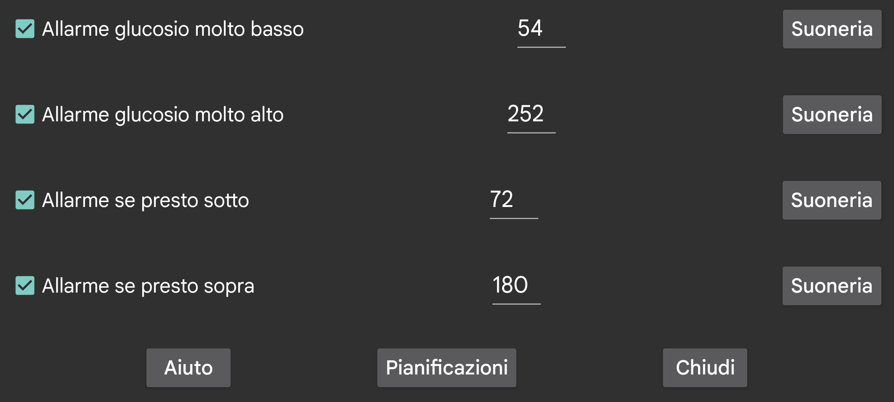

Secondo allarme di valore basso che scatta a una soglia inferiore rispetto all'allarme di glucosio basso.
Secondo allarme di valore alto che scatta a una soglia superiore rispetto all'allarme di glucosio alto.
Allarme quando si prevede che il glucosio in diminuzione scenda presto sotto questo valore.
Allarme quando si prevede che il glucosio in aumento superi presto questo valore.
Programma un certo profilo perché diventi attivo a un determinato orario del giorno. In questo modo puoi usare soglie di glucosio o suonerie diverse durante il giorno e la notte, oppure disattivare automaticamente l'annuncio vocale dei valori del glucosio di notte.